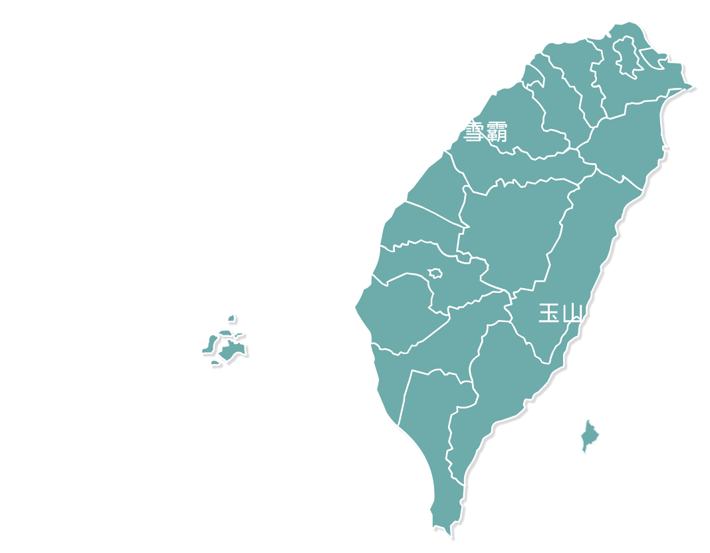
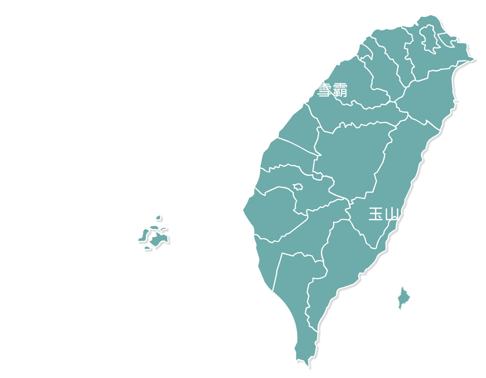

國家公園
臺灣自然觀光資源相當豐富，共設置了九個國家公園，分別為在臺北市近郊，以火山地形著稱的「陽明山國家公園」；橫跨新竹、苗栗兩縣，並以臺灣特有魚種-櫻花鉤吻鮭著稱的「雪霸國家公園」；東部花蓮縣境內，以立霧溪畔高聳深邃的峽谷地形而聞名國內外的「太魯閣國家公園」。
 

國家公園
臺灣自然觀光資源相當豐富，共設置了九個國家公園，分別為在臺北市近郊，以火山地形著稱的「陽明山國家公園」；橫跨新竹、苗栗兩縣，並以臺灣特有魚種-櫻花鉤吻鮭著稱的「雪霸國家公園」；東部花蓮縣境內，以立霧溪畔高聳深邃的峽谷地形而聞名國內外的「太魯閣國家公園」。
位於中部橫跨數縣市的「玉山國家公園」；以燦爛陽光聞名、位於臺灣南端，充滿南洋風味的「墾丁國家公園」；以戰地文物地景著名的「金門國家公園」；由珊瑚碎屑及貝殼風化形成獨特白沙地質景觀的「東沙環礁國家公園」；兼具人文歷史及生態保育的「台江國家公園」；有自然生態、地質景觀與人文史跡等資源的「澎湖南方四島國家公園」，這九大國家公園除了有美麗的景色之外，更蘊涵著豐富的生態，只有親身體驗才能感受大自然神奇奧妙的無窮力量。
陽明山國家公園
明山國家公園緊臨台北都會區，全區以大屯火山群彙為主，因火山活動造成的錐狀與鐘狀火山體、火口湖、硫氣孔、地熱與溫泉，具有研究及娛樂價值
雪霸國家公園
雪霸國家公園成立於1992年，北以邊古嚴山至樂山間之稜線為界，東界為大甲溪上游，西以北坑山至小雪山的天然稜線為主，南以宇羅尾山、...
太魯閣國家公園
太魯閣國家公園橫跨花蓮、南投及臺中，以雄偉壯麗、幾近垂直的大理岩峽谷景觀聞名。沿著立霧溪的峽谷風景線而行，觸目所及皆是壁立...
玉山國家公園
玉山國家公園位居臺灣中央地帶，為我國第二座國家公園。區內崇山峻嶺，臺灣三千公尺以上百岳名山有三十座位處其中，有氣勢磅礡、雄偉壯麗者...
墾丁國家公園
墾丁國家公園位於屏東縣境內，成立於1984年1月，是我國第一座成立的國家公園，三面環海，同時涵蓋陸域與海域。由於百萬年來地殼運動不斷的作用...
台江國家公園
民國98年成立的台江國家公園，位於臺灣本島西南沿海，陸域縱貫臺南市沿海，跨越七股溪、曾文溪、鹿耳門溪、鹽水溪等四條溪流出海口...
澎湖南方四島
澎湖南方四島位於澎湖南方的東嶼坪嶼、西嶼坪嶼、東吉嶼、西吉嶼合稱澎湖南方四島。於南方四島遺世獨立，加上近幾十年來受到產業...
東沙環礁
東沙環礁國家公園擁有我國海域唯一發育完整的環礁，係由珊瑚礁經千萬年的生長堆積而形成，屬於特殊珍貴自然景觀，足以代表國家自然遺產，因此成為我國第七座新設立的國家公園。